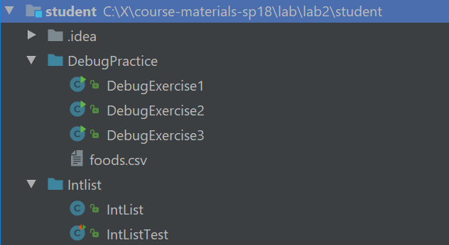
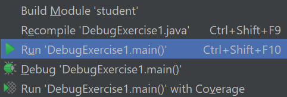

Pre-lab
Josh note: This lab is in beta, but the final lab will be very similar to this. Apologies for any typos or errors. I decided to do a major last minute revision of lab 2 to make it practical, and also had jury duty so that made it tough to complete in a timely fashion. Hope you like it.
- Run
git pull skeleton masterin your repo. You should get alab2/folder. - Lab 2 Setup
Introduction
In this lab, you will learn about basic IntelliJ features, Destructive vs NonDestructive methods, and IntLists.
Your job for this assignment is to run through the debugging exercises and to
create methods for IntList.java.
Debugger Basics
Repeat the project setup process from lab 2 setup. However, this time, you should import from your lab2 directory instead of your lab2setup directory. This includes adding the library-sp18/javalib to your libraries again. Yes, it’s a lot of clicks, but you’ll get used to it, and it builds character.
After importing, your IntelliJ should look something like the following: 
Breakpoints and Step Into
We’ll start by running the main method in DebugExerciseOne. Open up this file in IntelliJ and click the run button. You should see three statements printed to the console, one of which should strike you as incorrect (note: if your code says round(10/2) three times, you have an old version of the skeleton, use git pull skeleton master again). If you’re not sure how to run DebugExerciseOne, right click on it in the list of files and click the Run DebugExercise1.main button as shown below:

Somewhere in our code there is a bug, but don’t go carefully reading the code for it! While you might be able to spot this particular bug, often bugs are nearly impossible to see without actually trying to run the code and probe what’s going on as it executes.
Many of you have had lots of experience with using print statements to probe what a program is thinking as it runs. While print statements can be very useful for debugging, they have a few disadvantages: They require you to modify your code (to add print statements). They require you to explicitly state what you want to know (since you have to say precisely what you want to print). And they provide their results in a format that can be hard to read, since it’s just a big blob of text in the execution window.
Often (but not always) it takes less time and mental effort to find a bug if you use a debugger. The IntelliJ debugger allows you to pause the code in the middle of execution, step the code line by line, and even visualize the organization of complex data structures like linked lists.
While they are powerful, debuggers have to be used properly to gain any advantage. We encourage you to do what one might call “scientific debugging”, that is, debugging by using something quite similar to the scientific method!
Generally speaking, you should formulate hypotheses about how segments of your code should behave, and then use the debugger to resolve whether those hypotheses are true. With each new piece of evidence, you will refine your hypotheses, until finally, you cannot help but stumble right into the bug.
Our first exercise introduces us to two of our core tools, the breakpoint and the
step over button. In the left-hand Project view, right click (or two finger click) on the
DebugExerciseOne file and this time select the Debug option rather than the Run option. If the
Debug option doesn’t appear, it’s because you didn’t properly import your lab2
project (see steps 1-10 of lab2setup).

You’ll see that the program simply runs again, with no apparent difference! That’s because we haven’t give the debugger anything interesting to do. Let’s fix that by “setting a breakpoint”. To do so, scroll to the line that says int t3 = 3;, then left click just to the right of the line number. You should see a red dot appear that vaguely resembles a stop sign, which means we have now set a breakpoint. If we run the program in debug mode again it’ll stop at that line. If you’d prefer to avoid right-clicking to run your program again, you can click the bug icon in the top right of the screen instead. An animated gif showing off the steps in this paragraph is available at this link.
If the text console (that says things like “round(10/2)”) does not appear when you click the debug button, you may need to perform one additional step before proceeding. At the top left of the information window in the bottom panel, you should see two tabs labeled “debugger” and “console”. Click and drag the “console” window to the far right of the bottom panel. This will allow you to show both the debugger and the console at the same time. An animated gif showing off this process is available at this link.
Once you’ve clicked the debug button (and made your console window visible if necessary), you should see that the program has paused at the line at which you set a breakpoint, and you should also see a list of all the variables at the bottom, including t, b, result, t2, b2, and result2. We can advance the program one step by clicking on the “step into” button, which is an arrow that points down and to the left as shown on the next line:
We’ll discuss the other buttons later in this lab. Make sure you’re pressing ‘step into’ rather than ‘step over’. Step-into points down and to the right, whereas step-over points straight down.
Each time you click this button, the program will advance one step. Before you click each time, formulate a hypothesis about how the variables should change. Repeat this process until you find a line where the result does not match your expectations or the expectations of the person who wrote the code. Try and figure out why the line doesn’t do what you expect. If you miss the bug the first time, click the stop button (red square), and then the debug button to start back over. Optionally, you may fix the bug once you’ve found it.
Step Over and Step Out
Just as we rely on layering abstractions to construct and compose programs, we should also rely on abstraction to debug our programs. The “step over” button in IntelliJ makes this possible. Whereas the “step into” from the previous exercise shows the literal next step of the program, the “step over” button allows us to complete a function call without showing the function executing.
The main method in DebugExerciseTwo is supposed to take two arrays, compute the element-wise max of those two arrays, and then sum the resulting maxes. For example, suppose the two arrays are {2, 0, 10, 14} and {-5, 5, 20, 30}. The element-wise max is {2, 5, 20, 30}, e.g. in the second position, the larger of “0” and “5” is 5. The sum of this element-wise max is 2 + 5 + 20 + 30 = 57.
There are two different bugs in the provided code. Your job for this exercise is to fix the two bugs, with one special rule: You should NOT step into the max or add functions or even try to understand them. These are very strange functions that use syntax (and bad style) to do easy tasks in an incredibly obtuse way. If you find yourself accidentally stepping into one of these two functions, use the “step out” button (an upwards pointing arrow) to escape.
Even without stepping INTO these functions, you should be able to tell whether they have a bug or not. That’s the glory of abstraction! Even if I don’t know how a fish works at a molecular level, there are some cases where I can clearly tell that a fish is dead.
If you find that one of these functions has a bug, you should completely rewrite it rather than trying to fix it.
Now that we’ve told you what “step over” does, try exploring how it works exactly and try to find the two bugs. If you’re having the issue that the using run (or debug) button in the top right keeps running DebugExercise1, right click on DebugExercise2 to run it instead.
If you get stuck or just want more guidance, read the directions below.
Further Guidance (for those who want it)
To start, try running the program. The main method will compute and print an answer to the console. Try manually computing the answer, and you’ll see that the printed answer is incorrect. If you don’t know how to manually compute the answer, reread the description of what the function is supposed to do above, or read the comments in the provided code.
Next, set a breakpoint to the line in main that calls sumOfElementwiseMaxes. Then use the debug button, followed by the step-into function to reach the first line of sumOfElementWiseMaxes. Then use the “step over” button on the line that calls arrayMax. What is wrong with the output (if anything), i.e. how does it fail to match your expectations? Note that to see the contents of an array, you may need to click the rightward pointing triangle next to the variable name in the variables tab of the debugger window in the bottom panel.
If you feel that there is a bug, step into arrayMax (instead of over it) and try to find the bug. Reminder: do not step into max. You should be able to tell if max has a bug using step over. If max has a bug, replace it completely.
Repeat the same process with arraySum and add. Once you’ve fixed both bugs, double check that the sumOfElementwiseMaxes method works correctly for the provided inputs. Note: This is not proof that sumOfElementwiseMaxes is correct, but it’s not necessary to write any additional tests to help verify this fact (that will be coming next week).
Conditional Breakpoints and Resume
Sometimes it’s handy to be able to set a breakpoint and return to it over and over. In this final debugging exercise, we’ll see how to do this and why it is useful.
Try running DebugPractice3, which attempts to count the number of turnips available from all grocery stores nearby. It does this by reading in foods.csv, which provides information about foods available, where each line of the file corresponds to a single product available at a single store. Feel free to open the file to see what it looks like. Strangely, the number of turnips seems to be negative.
Set a breakpoint on the line where totalTurnips = newTotal occurs, and you’ll see that if you “step over”, the total number of turnips is incremented as you’d expect. One approach to debugging would be to keep clicking “step over” repeatedly until finally something goes wrong. However, this is too slow. One way we can speed things up is to click on the “resume” button (just down and to the left from the step-over button), which looks like a green triangle pointing to the right. Repeat this and you’ll see the turnip count incrementing repeatedly until something finally goes wrong.
An even faster approach is to make our breakpoint conditional. To do this, right (or two-finger) click on the red breakpoint dot. Here, you can set a condition for when you want to stop. In the condition box, enter “newTotal < 0”, stop your program, and try clicking “debug” again. You’ll see that you land right where you want to be.
See if you can figure out the problem. If you can’t figure it out, talk to your neighbors or a TA or a lab assistant.
Recap: Debugging
By this point you should understand the following tools:
- Breakpoints
- Stepping over
- Stepping into
- Stepping out (though you might not have actually used this feature for this lab)
- Conditional breakpoints
- Resuming
However, this is simply scratching the surface of the features of the debugger! Feel free to experiment. Remember that watches tab? Why not read into what that does? Or the evaluate expressions button (the last button on the row of step into/over/out buttons)? There might be a cheeky way to cheat my games if you use that. Or perhaps look deeper into breakpoints. I personally find conditional breakpoints useful from time to time. In lab 3, we will try out a couple of these features.
Application: IntLists
Introduction/Review of IntLists
As discussed in Monday’s lecture, an IntList is our CS61B implementation for a
naked recursive linked list of integers. Each IntList has a first and rest variable. The first is
the int element contained by the node, and the rest is the next chain in the
list (another IntList!).
In the IntList directory for this lab, we’ve provided a much larger IntList.java than the one we created in class. It has five important new static methods, two of which you’ll fill in:
void dSquareList(IntList L): modifies the list so that all of its elements are squared.IntList squareListIterative(IntList L): returns a version of the list with all elements squared, using iteration. The list is not modified.IntList squareListRecursive(IntList L): returns a version of the list with all elements squared, using recursion. The list is not modified.dcatenate(IntList A, IntList B): returns a list consisting of all elements of A, followed by all elements of B. May modify A. To be completed by you.catenate(IntList A, IntList B): returns a list consisting of all elements of A, followed by all elements of B. May not modify A. To be completed by you.
The class also includes additional methods that you are not supposed to read or understand. They are omitted from being described in this lab.
Destructive vs. Non-Destructive
For a given piece of desired functionality, there are often many ways to write the same function. For example, consider the task of squaring every item in a list of numbers. In the provided IntList java.
Let’s consider a method dSquareList that will “destructively” square every item
in a list (similar to the extra problem from discussion in week 2.
IntList origL = Intlist.list(1, 2, 3)
dSquareList(origL);
// origL is now (1, 4, 9)
By destructive, we mean that the original list changes. The term “mutative” is also sometimes used (as in discussion from week 2). By contrast a non-destructive method like squareListIterative does not affect the original list, e.g.
IntList origL = Intlist.list(1, 2, 3)
IntList squaredList = squareListIterative(origL);
// origL is still (1, 2, 3)
// squaredList is (1, 4, 9)
dSquareList Implementation
Here is one possible implementation of dSquareList(), along with a call to dSquareList:
public static void dSquareList(IntList L) {
while (L != null) {
L.first = L.first * L.first;
L = L.rest;
}
}
IntList origL = Intlist.list(1, 2, 3)
dSquareList(origL);
// origL is now (1, 4, 9)
The reason that dSquareList is destructive is because we change the values of
the original input IntList. As we go along, we square each value, and the
action of changing the internal data persists.
It is also important to observe that the bits in the origL box do not change, i.e. the variable still points to exactly the same object in memory when dSquareList completes.
To ensure that these ideas all make sense, set a breakpoint in dSquareList and run the IntListTest class. Use the Java Visualizer (provided as part of the 61B plugin) to visualize the IntList. The visualizer is an icon of a blue cup with glasses, and is below the resume button. See the 61B plugin guide if you can’t figure out how to get the visualizer to show.
If you don’t understand how the dSquareList method works, ask a TA or lab assistant for help. They are here to help you! Pointers
and IntLists might seem confusing at first, but it’s important that you
understand these concepts!
NOTE: The choice to return void rather than a pointer to L was an
arbitrary decision. Different languages and libraries use different conventions
(and people get quite grumpy about which is the “right” one).
Non-destructive Squaring
The provided squareListIterative() and squareListRecursive() methods
are both non-destructive. That is, the underlying IntList passed into the
methods does not get modified, and instead a fresh new copy is modified and
returned.
Look at squareListIterative and squareListRecursive. Ideally, you should spend some time trying to really understand them, including possibly using the visualizer. However, if you don’t have time this iterative version is much messier.
The iterative version of a non-destructive
method is often (but not always) quite a bit messier than the recursive version, since it takes
some careful pointer action to create a new IntList, build it up, and return
it.
Test Code
Optionally, look at the test method testDSquareList in IntListTest.java. This gives you a feeling for how tests will be written in this course moving forwards, and we’ll be requiring you to write tests starting in next week’s lab. You might also find them handy when writing your project 1A next week.
One major difference that the tests rely upon is that we’ve added a method to our IntList class called of that makes it easier to create
IntLists. For example, to create an IntList containing the numbers 0, 1, 2,
and 3, we could use the method as follows:
IntList myList = IntList.of(0, 1, 2, 3);
// Creates the IntList 0 -> 1 -> 2 -> 3 -> null
myList.firstreturns 0myList.restreturns 1 -> 2 -> 3 -> nullmyList.rest.rest.restreturns 3 -> nullmyList.rest.rest.rest.restreturns null- Pop quiz: what happens for
myList.rest.rest.rest.rest.rest? (Hint: it doesn’t successfully return something)
Observe that the IntList.of() method makes it much easier to create IntLists
compared to the brute force approach.
IntList myList = new IntList(0, null);
myList.rest = new IntList(1, null);
myList.rest.rest = new IntList(2, null);
myList.rest.rest.rest = new IntList(3, null);
// One line of using IntList.of() can do the job of four lines!
Implementing Destructive vs. Non-destructive Methods
To complete the lab, you should write methods dcatenate and catenate as described below. You may find the squaring methods from above to be useful as you write your code.
Both methods take in two IntLists, and concatenate them together. So
catenate(IntList A, IntList B) and dcatenate(IntList A, IntList B) both
result in an IntList which contains the elements of A followed by the
elements of B.
The only difference between these two methods is that dcatenate modifies the
original IntList A (i.e. it’s destructive) and catenate does not.
To complete the lab:
- Fill in one of
dcatenate()orcatenate(), and run them against our tests. Revise your code until it passes our tests. - Repeat for the method you haven’t yet completed. (We recommend you do one first and finish it before you start the next, because then you’ll be able to take advantage of the similar logic).
IntList problems can be tricky to think about, and there are always several
approaches which can work. Don’t be afraid to pull out pen and paper or go to
the whiteboard and work out some examples! If you get stuck, drawing out the
pointers can probably stimulate you back onto the path of progress. And, as
always, the debugger is a great option!
Feel free to use either recursion or iteration. For extra practice, try both!
It’s also often useful to first think about base cases (when A is null, for
example) - this works especially well for building up a recursive solution. In
other words, write up a solution that would work for the base case, then stop
and think about how to expand this solution into something that works for other
bigger cases.
Complete and Submit Lab 2
To complete this lab, you will submit IntList.java. Follow the submission instructions at the bottom of Lab 1.
Full Recap
In this lab, we went over:
- Stepping into, over, and out inside the IntelliJ debugger (this will be handy for projects!)
- Non-destructive vs. destructive methods
- IntLists and pointers
- Writing
IntListmethods destructively, non-destructively, recursively, and iteratively
FAQ and Common Issues
Things like String or String.equals() are red!
This is a JDK issue, go to File > Project Structure > Project > Project SDK to troubleshoot. If your Java version is 9.0, then you should have a 9.0 SDK and a Level 9 language level.
Things like @Test are red!
You forgot to add your libraries. You have to add your libraries every time you start a new project!
Console button isn’t showing up!
That’s because you didn’t compile successfully. Usually, it’s because you did not add your libraries.
Java files have a red circle, with a J inside the circle, next to the file icon
Right-click the folder containing that Java file > Mark as > Sources Root.